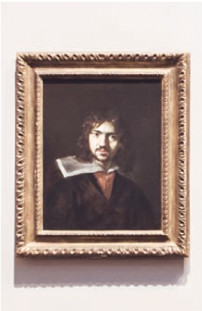

-
打造全新世界观,让你更爱你的生活
-
丰富多彩的公益活动，发挥新世界的主人公意识
-
时尚的新理念，超前体验未知的生活
-
完善的培养机制，培养你全新的世界观
关于新世界，你不知道的还有什么？
查找新世界城市活动信息
每个城市的有不同的活动信息，请自主查询您所需要了解的城市
北京活动
新社区大联盟

上海活动
夜上海新景观探索
深圳活动
全新海岸线观点站
香港活动
奢侈消费大派送

新世界/01
新世界是漫画《海贼王》中的伟大航路后半段海域的俗称。红色大陆将伟大航路分为两段，穿越世界政府玛丽乔亚所在赤色大陆，进入伟大航道后半段，称为新世界。由海上帝王"四皇"君临着，经过伟大航道的前半部的筛选很多在此航行着的海贼都实力高强，而海军实力却弱不禁风，所以新世界是海贼的世界。这里是最困难也是最危险的海域。 新世界中的"大海贼"各自拥有自己地盘以及无数的手下，就好比巨大的犯罪集团般君临天下，也因此来到新世界的海贼们多半都会选择做出纳入四皇旗下，或是不断向四皇挑衅战斗这两种手段借此生存下来。此外，许多海贼们有鉴于自身利益考量，还会抵达在新世界的时候，和其他海贼团达成协议，组成合作联盟，得到这个新世界全部的人，就能得到"海贼王"的称号。